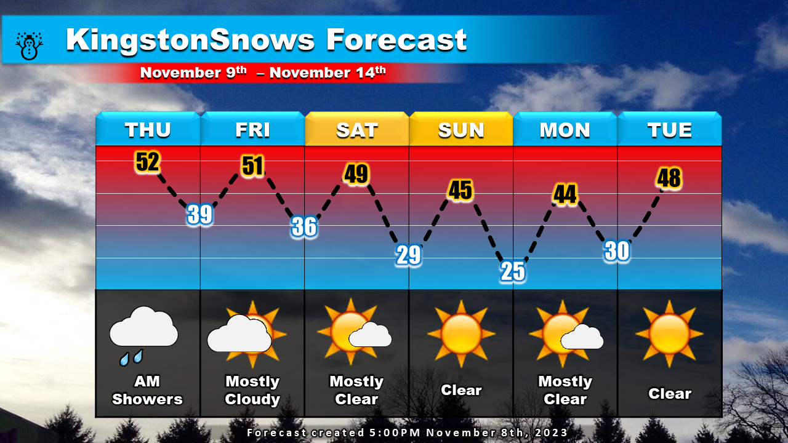
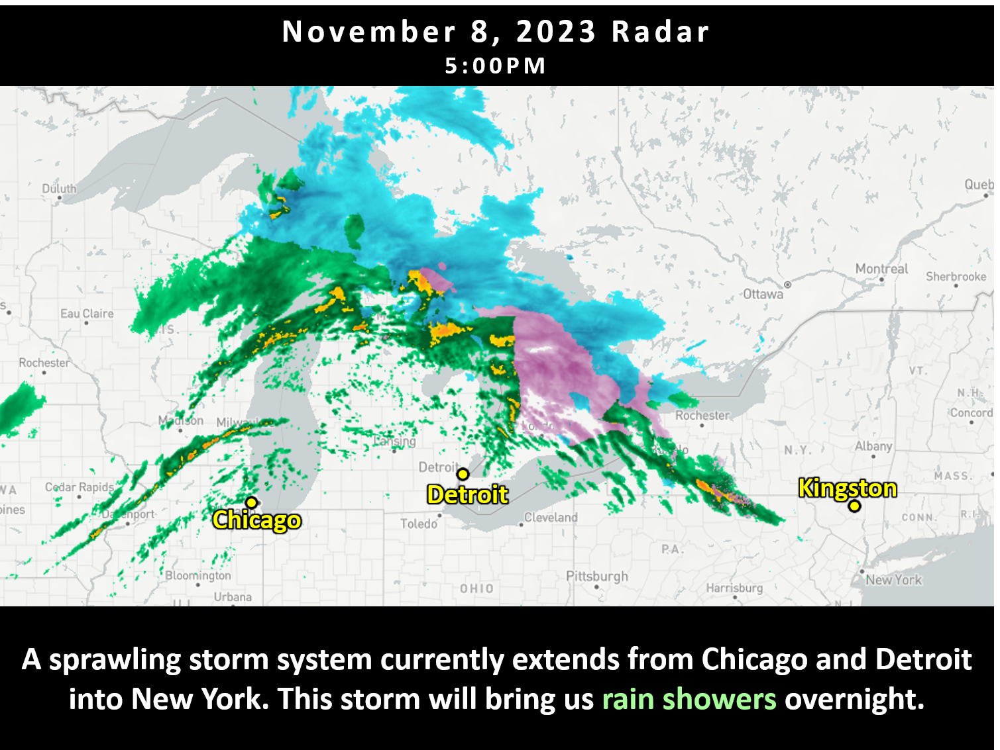

Showers tonight, Dry holiday
School Forecast
for Thursday November 9th
Last updated: 5:00PM Wednesday November 8, 2023
| 0% (Nope) |
|---|
| 0% (Nope) |
|---|
| 0% (Nope) |
|---|
___________________
Hopefully everone is having a great start to their November. The relatively pleasant weather will persist through the upcoming holiday weekend with a stretch of dry conditions, but first we'll have to get through some showers tonight.
The best chance for showers will be between 12AM tonight and 12PM Thursday. With temperatures dipping into the mid-30s overnight, any rain will be very cold. Can't completely rule outa few ice pellets or brief periods of sleet mixing in during the overnight hours, but if this occurs it should only be for a limited time and roads are likely to simply remain wet across the Kingston area. Drier weather will move in for Veteran's Day weekend. Afternoon temperatures will generally run in the 40s which is just slightly below normal.
While tonight's storm is only likely to result in wet roads acorss the Kingston area, areas in the Catskills are more likely to experience sleet. This could result in slick roads early tomorrow morning. Because of this, Ulster County school districts such as Livingston Manor, Margaretville, Tri-Valley, and possibly Onteora have a low to medium chance of issuing two-hour delays tomorrow.
Next Update:
On Saturday
-Ethan
KingstonSnows | Kingston, New York
Website built by Ethan Burwell